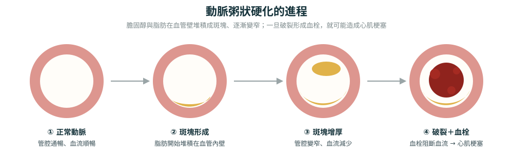

什麼是冠狀動脈疾病？
冠狀動脈疾病（coronary artery disease, CAD）是指供應心臟含氧血液的冠狀動脈發生狹窄或阻塞的疾病。動脈壁上逐漸堆積的斑塊（plaque，包含膽固醇）會限制能夠到達心肌的血液量。
冠狀動脈疾病非常常見。美國超過 1,800 萬成人患有此病，是美國及全球的首要死因。
兩種主要形式
穩定性缺血性心臟病
冠狀動脈經過數年逐漸慢性狹窄，症狀可預測且較為穩定。
急性冠心症（ACS）
斑塊突然破裂導致的緊急狀況，可能引發心肌梗塞，屬於醫療急症。
症狀
在早期階段，冠狀動脈疾病可能沒有任何症狀。隨著動脈逐漸狹窄，可能出現以下症狀：
- 穩定型心絞痛（stable angina）：暫時性的胸痛或胸悶，以可預測的模式反覆出現。通常在體力活動或情緒壓力時發作，休息後會緩解。
- 呼吸困難：在輕度體力活動時即感到喘不過氣。
- 疲勞感：經常感到疲倦，或無法像以往一樣運動。
- 肩膀、手臂、頸部或下巴疼痛：可能突然出現。
重要提醒：有時候，冠狀動脈疾病的第一個症狀就是心肌梗塞（heart attack）。不要忽視任何胸部不適的徵兆。
成因
動脈粥狀硬化（atherosclerosis）是冠狀動脈疾病的根本原因。這是一個斑塊在全身動脈中逐漸堆積的過程。
斑塊由以下成分組成：
- 膽固醇（cholesterol）
- 代謝廢物
- 鈣（calcium）
- 纖維蛋白（fibrin，一種幫助血液凝固的物質）
隨著斑塊沿著動脈壁堆積，動脈會變得狹窄且僵硬。最終，心臟無法獲得正常運作所需的氧氣和營養（稱為心肌缺血，myocardial ischemia）。

風險因子
不可改變的因子
- 年齡：男性 >45 歲或女性 >55 歲
- 家族史：父親或兄弟在 55 歲前、母親或姊妹在 65 歲前曾患心臟病
可改變的生活方式因子
- 攝取過多飽和脂肪或精製碳水化合物
- 運動不足
- 睡眠不足
- 吸菸、電子菸或使用任何菸草製品
- 體重過重/肥胖（BMI >25）
- 過量飲酒
相關醫療狀況
- 高血壓（hypertension）
- 高 LDL 膽固醇（「壞」膽固醇）
- 低 HDL 膽固醇（「好」膽固醇）
- 高三酸甘油酯（hypertriglyceridemia）
- 糖尿病（diabetes）
- 貧血（anemia）
- 自體免疫疾病（紅斑性狼瘡、類風濕性關節炎）
- 慢性腎臟病
- HIV/AIDS
- 代謝症候群（metabolic syndrome）
- 睡眠障礙（睡眠呼吸中止症）
女性特有的風險因子
- 早發性停經（40 歲前）
- 子宮內膜異位症（endometriosis）
- 妊娠糖尿病、子癲前症或子癲症病史
- 使用荷爾蒙避孕藥
併發症
冠狀動脈疾病的主要併發症是心肌梗塞。這是可能致命的醫療急症。
長期併發症包括：
- 心律不整（arrhythmia），包括心房顫動（atrial fibrillation）
- 心臟驟停（cardiac arrest）
- 心因性休克（cardiogenic shock）
- 心臟衰竭（heart failure）
診斷方法
身體檢查
- 測量血壓
- 使用聽診器聽診心臟
- 評估症狀與病史
- 了解生活方式與家族史
檢查項目
- 血液檢查（blood tests）
- 心導管檢查（cardiac catheterization）
- 電腦斷層冠狀動脈攝影（CT coronary angiogram）
- 心臟磁振造影（heart MRI）
- 冠狀動脈鈣化評分（coronary calcium scan）
- 心臟超音波（echocardiogram）
- 心電圖（EKG/ECG）
- 運動負荷試驗（exercise stress test）
- 胸部 X 光（chest X-ray）
治療
生活方式改變
- 戒菸：不吸菸、不使用電子菸或任何菸草製品
- 心臟健康飲食：低鈉、低飽和脂肪、低反式脂肪、低糖。地中海飲食（Mediterranean diet）已被證實能降低風險
- 規律運動：每週至少 5 天、每天 30 分鐘的步行或其他活動
- 限制飲酒
- 維持健康體重
藥物治療
- 降血壓藥物：控制高血壓
- 降膽固醇藥物：如他汀類藥物（statins）
- 心絞痛治療：硝化甘油（nitroglycerin）、雷諾拉嗪（ranolazine）
- 預防血栓藥物：阿斯匹靈（aspirin）及其他抗血小板藥物，防止血液凝結，使血液更容易流過狹窄的動脈
- 乙型阻斷劑（beta blockers）：幫助心臟跳動更慢、更輕鬆
手術與介入治療
經皮冠狀動脈介入治療（PCI / 氣球擴張術）
醫師重新打開阻塞的動脈以改善血流，通常同時放置支架（stent）來維持動脈暢通。大多數支架塗有藥物以防止再狹窄。恢復期約 1 週可回復正常活動。
冠狀動脈繞道手術（CABG）
取用腿部、手臂或胸部的健康血管，建立一條繞過阻塞處的新血流通道。住院通常超過 1 週，完全恢復需要 6 至 12 週。
預防
由於部分風險因子（如年齡和家族史）無法改變，並非所有冠狀動脈疾病都可以預防。但可以採取以下措施降低風險：
- 戒菸並遠離所有菸草製品
- 選擇心臟健康的飲食
- 獲得充足的睡眠
- 維持健康體重
- 了解自己的心臟病風險
- 限制飲酒
- 增加日常活動量——每週至少 150 分鐘中等強度運動
- 遵醫囑服藥
冠狀動脈疾病無法逆轉，但可以透過適當的管理來控制病情並防止其惡化。
何時應就醫？
定期回診
依照醫師指示定期回診追蹤檢查。
聯繫醫師的情況
- 出現新的或改變的症狀
- 藥物產生副作用
- 對病情或治療方案有疑問
緊急狀況（立即撥打急救電話）：
若出現心肌梗塞或中風的症狀，請立即就醫。這些是危及生命的醫療急症，需要緊急處置。
若出現心肌梗塞或中風的症狀，請立即就醫。這些是危及生命的醫療急症，需要緊急處置。
冠狀動脈疾病的診斷可能會影響心理健康，憂鬱與焦慮在此疾病中相當常見。如有需要，建議尋求心理諮詢。